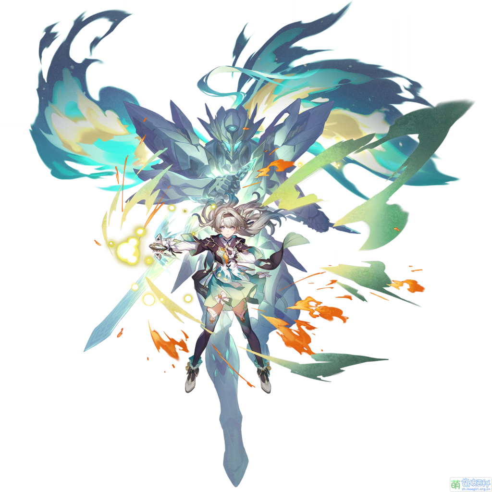

流螢
Firefly
ホタル
「我夢見一片焦土，一株破土而生的新蕊，它迎著朝陽綻放，向我低語呢喃。」
人們為何選擇沉睡？我想……
…是因為害怕從「夢」中醒來。
簡介

星核獵手成員，身著機械裝甲「薩姆」的少女。
以兵器的身份誕生，因基因改造罹患「失熵」的痛苦。
為尋求生命的意義加入星核獵手，不斷追逐違抗命運的方式。
火螢這種生物很神奇吧？它們或許會撲向火燭，或許會突然老化。
但在那之前的每一個夜晚，它們的光芒會比星星更耀眼。